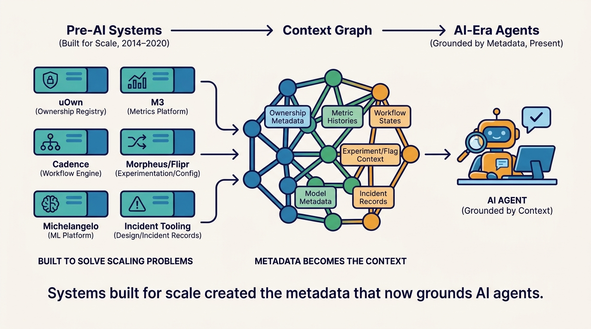

Part I — FOUNDATIONS: The Decade Before AI
Build What the Market Cannot Yet Sell: Uber's Pre-AI Platform Bets

Image generated by Google Gemini (gemini-3-pro-image-preview)
Part I — FOUNDATIONS: The Decade Before AI

Image generated by Google Gemini (gemini-3-pro-image-preview)